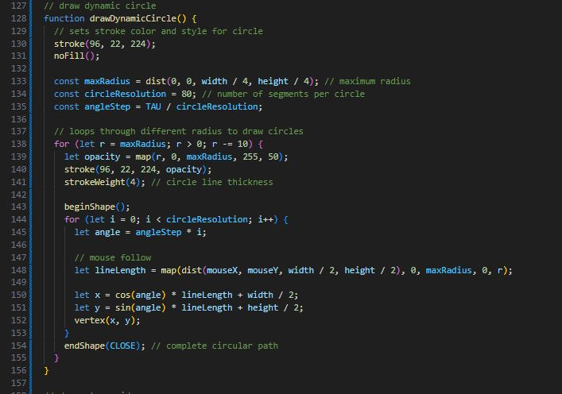
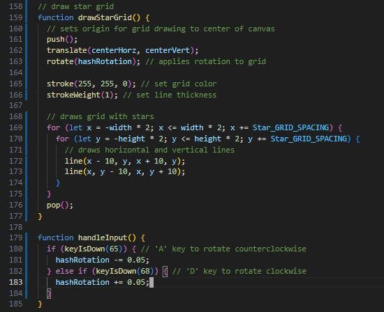
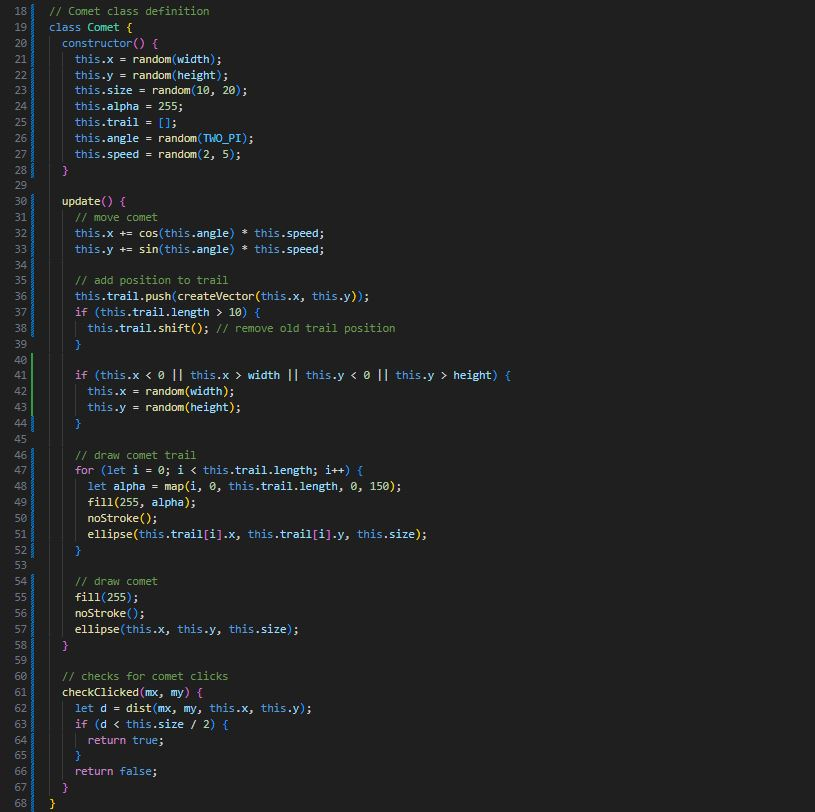
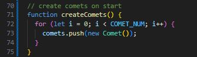
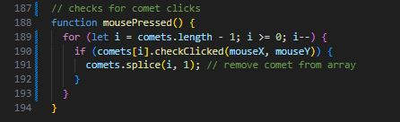

Experiment 2 - Vector Art, Animation & Interactivity
Description
This assignment is to create a generative design piece by starting from a reference generative design you pick out and creating your own take on it and adding more.
The main goals of this assignment is imitate, intergrate, and innovate. Imitate and intergrate is to taken the reference design and creating your own design based on the design and code. Innovate is to go further and adding more designs that work together.
Technical
Imitate
For this project I too inspiration from the design and code of a generative design we were able to chosoe from for this assignment.
Design Link
Intergrate
The first thing I did was to create a star grid and then implemented a circle target like pattern that will grow and retract like the reference design.
To make this piece be even more interactive, not only does the circles grow and retract, the A and D key will rotate the star grid.
I did this because I noticed the star grid looks like its distorting (when its not) by the circles and I wanted to lean into the who distortion look and make the design even more dizzy.
 
Innovate
At this point I felt like the project was missing an overall theme and the distortions made me think of space.
I changed the circle color to purple to make it look like a blackhole and the star colors on the star grid was changed to yellow like stars.
To add more to really make it seem like space, I added comets that spawn up to 5 at a time on the canvas and is just a white ball with a trail behind it.
Players can click on them to destroy them but it is very difficult.

 
Reflection
This assignment was really fun and wasn't very difficult. I loved the experimenting by taking a reference generative design and creating our own takes based on it.
I think the hardest part was just not overplanning it. I kept doing more than what was possible within the time frame and for my skill level which stalled this project for so long.
Once I figured out to do it step by step then choose a theme, it was easy and I quickly managed to create this space themed generative design.
The interactions are my favorite as user can grow or retract the circle and also mess with the star grid and comets. User/Player interaction is important.
I believed this project shows how I met all 3 focuses: imitate, intergrate, and innovate.